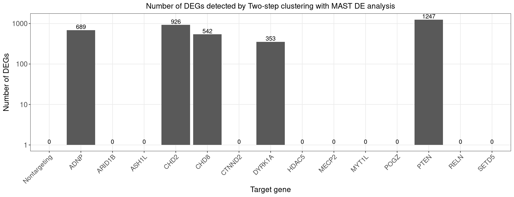

Two step clustering analysis on LUHMES CROP-seq data
Kaixuan Luo
2022-08-10
Last updated: 2022-08-12
Checks: 7 0
Knit directory: GSFA_analysis/
This reproducible R Markdown analysis was created with workflowr (version 1.7.0). The Checks tab describes the reproducibility checks that were applied when the results were created. The Past versions tab lists the development history.
Great! Since the R Markdown file has been committed to the Git repository, you know the exact version of the code that produced these results.
Great job! The global environment was empty. Objects defined in the global environment can affect the analysis in your R Markdown file in unknown ways. For reproduciblity it’s best to always run the code in an empty environment.
The command set.seed(20220524) was run prior to running
the code in the R Markdown file. Setting a seed ensures that any results
that rely on randomness, e.g. subsampling or permutations, are
reproducible.
Great job! Recording the operating system, R version, and package versions is critical for reproducibility.
Nice! There were no cached chunks for this analysis, so you can be confident that you successfully produced the results during this run.
Great job! Using relative paths to the files within your workflowr project makes it easier to run your code on other machines.
Great! You are using Git for version control. Tracking code development and connecting the code version to the results is critical for reproducibility.
The results in this page were generated with repository version 9212bba. See the Past versions tab to see a history of the changes made to the R Markdown and HTML files.
Note that you need to be careful to ensure that all relevant files for
the analysis have been committed to Git prior to generating the results
(you can use wflow_publish or
wflow_git_commit). workflowr only checks the R Markdown
file, but you know if there are other scripts or data files that it
depends on. Below is the status of the Git repository when the results
were generated:
Ignored files:
Ignored: .Rhistory
Ignored: .Rproj.user/
Untracked files:
Untracked: analysis/interpret_gsfa_LUHMES.Rmd
Untracked: analysis/spca_LUHMES_data.Rmd
Untracked: analysis/test_seurat.Rmd
Untracked: code/music_LUHMES_Yifan.R
Untracked: code/plotting_functions.R
Untracked: code/run_music_LUHMES.R
Untracked: code/run_music_LUHMES_data.sbatch
Untracked: code/run_sceptre_LUHMES_data.sbatch
Untracked: code/run_sceptre_Tcells_stimulated_data.sbatch
Untracked: code/run_sceptre_Tcells_unstimulated_data.sbatch
Untracked: code/run_spca_LUHMES.R
Untracked: code/run_spca_TCells.R
Untracked: code/sceptre_LUHMES_data.R
Untracked: code/sceptre_Tcells_stimulated_data.R
Untracked: code/sceptre_Tcells_unstimulated_data.R
Untracked: code/seurat_sim_fpr_tpr.R
Unstaged changes:
Modified: analysis/sceptre_LUHMES_data.Rmd
Modified: analysis/twostep_clustering_TCells_data.Rmd
Modified: code/run_sceptre_cropseq_data.sbatch
Modified: code/sceptre_analysis.R
Note that any generated files, e.g. HTML, png, CSS, etc., are not included in this status report because it is ok for generated content to have uncommitted changes.
These are the previous versions of the repository in which changes were
made to the R Markdown
(analysis/twostep_clustering_LUHMES_data.Rmd) and HTML
(docs/twostep_clustering_LUHMES_data.html) files. If you’ve
configured a remote Git repository (see ?wflow_git_remote),
click on the hyperlinks in the table below to view the files as they
were in that past version.
| File | Version | Author | Date | Message |
|---|---|---|---|---|
| Rmd | 9212bba | kevinlkx | 2022-08-12 | added more descriptions |
| html | d7c7e29 | kevinlkx | 2022-08-12 | Build site. |
| Rmd | 0bc181b | kevinlkx | 2022-08-12 | added more descriptions |
| html | 056e9c8 | kevinlkx | 2022-08-12 | Build site. |
| Rmd | a900cfd | kevinlkx | 2022-08-12 | added more descriptions |
| html | 02e29d2 | kevinlkx | 2022-08-11 | Build site. |
| Rmd | 5796838 | kevinlkx | 2022-08-11 | fix intro formating |
| html | da6979c | kevinlkx | 2022-08-11 | Build site. |
| Rmd | 39baeef | kevinlkx | 2022-08-11 | update barplots for DEGs |
mkdir -p /project2/xinhe/kevinluo/GSFA/data
cp /project2/xinhe/yifan/Factor_analysis/shared_data/LUHMES_cropseq_data_seurat.rds \
/project2/xinhe/kevinluo/GSFA/data
cp /project2/xinhe/yifan/Factor_analysis/LUHMES/GSE142078_raw/GSM4219575_Run1_genes.tsv.gz \
/project2/xinhe/kevinluo/GSFA/data/LUHMES_GSM4219575_Run1_genes.tsv.gzLoad the data sets
CROP-seq datasets:
/project2/xinhe/yifan/Factor_analysis/shared_data/LUHMES_cropseq_data_seurat.rds
The data are Seurat objects, with raw gene counts stored in
obj@assays$RNA@counts, and cell meta data stored in
obj@meta.data. Normalized and scaled data used for GSFA are
stored in obj@assays$RNA@scale.data, the rownames of which
are the 6k genes used for GSFA.
Load packages
suppressPackageStartupMessages(library(data.table))
suppressPackageStartupMessages(library(Seurat))
suppressPackageStartupMessages(library(MUSIC))
suppressPackageStartupMessages(library(ComplexHeatmap))
suppressPackageStartupMessages(library(ggplot2))
require(reshape2)
require(dplyr)
require(ComplexHeatmap)
theme_set(theme_bw() + theme(plot.title = element_text(size = 14, hjust = 0.5),
axis.title = element_text(size = 14),
axis.text = element_text(size = 13),
legend.title = element_text(size = 13),
legend.text = element_text(size = 12),
panel.grid.minor = element_blank())
)
source("code/plotting_functions.R")Set directories
data_dir <- "/project2/xinhe/kevinluo/GSFA/data/"
res_dir <- "/project2/xinhe/kevinluo/GSFA/twostep_clustering/LUHMES"
dir.create(res_dir, recursive = TRUE, showWarnings = FALSE)Load input data
combined_obj <- readRDS(file.path(data_dir,"LUHMES_cropseq_data_seurat.rds"))Pre-processing
The steps below encompass the standard pre-processing workflow for scRNA-seq data in Seurat.
These represent the selection and filtration of cells based on QC metrics, data normalization and scaling, and the detection of highly variable features.
# The number of unique genes detected in each cell.
cat("The number of unique genes detected in each cell:\n")
range(combined_obj$nFeature_RNA)
# The total number of molecules detected within a cell
cat("The total number of molecules detected within a cell:\n")
range(combined_obj$nCount_RNA)
# The percentage of reads that map to the mitochondrial genome
cat("The percentage of reads that map to the mitochondrial genome:\n")
range(combined_obj$percent_mt)The number of unique genes detected in each cell:
[1] 375 4861
The total number of molecules detected within a cell:
[1] 1572 19991
The percentage of reads that map to the mitochondrial genome:
[1] 0.128082 9.804772# Visualize QC metrics as a violin plot
VlnPlot(combined_obj, features = c("nFeature_RNA", "nCount_RNA", "percent_mt"), ncol = 3)We filter cells that have more than 500 genes identified.
combined_obj <- subset(combined_obj, subset = nFeature_RNA > 500)Normalizing the data
combined_obj <- NormalizeData(combined_obj, normalization.method = "LogNormalize", scale.factor = 10000)Identification of highly variable features (feature selection)
Select a subset of features that exhibit high cell-to-cell variation in the dataset, by modeling the mean-variance relationship inherent in single-cell data.
Select the 1,000 most variable genes across cells.
combined_obj <- FindVariableFeatures(combined_obj, selection.method = "vst", nfeatures = 1000)Regress out total UMI counts per cell and percent of mitochondrial genes detected per cell and scaled to obtain gene level z-scores. The results of this are stored in combined_obj[[“RNA”]]@scale.data
combined_obj <- ScaleData(combined_obj, vars.to.regress = c("nCount_RNA", "percent_mt"))
# combined_obj <- ScaleData(combined_obj, vars.to.regress = c("nCount_RNA", "percent_mt"), features = selected_gene_id)
saveRDS(combined_obj, file = file.path(res_dir, "LUHMES_seurat_processed_data.rds"))Perform dimensional reduction
Perform PCA on the scaled data.
combined_obj <- readRDS(file.path(res_dir, "LUHMES_seurat_processed_data.rds"))
combined_obj <- RunPCA(combined_obj, features = VariableFeatures(object = combined_obj))
ElbowPlot(combined_obj, ndims = 50)
| Version | Author | Date |
|---|---|---|
| da6979c | kevinlkx | 2022-08-11 |
Cluster the cells
Embed cells in K-nearest neighbor (KNN) graph using
FindNeighbors() using the first 30 PCs. Then apply the
Louvain algorithm to find clusters using
FindClusters() function with default resolution (0.8).
combined_obj <- FindNeighbors(combined_obj, dims = 1:30)
combined_obj <- FindClusters(combined_obj)
saveRDS(combined_obj, file = file.path(res_dir, "LUHMES_seurat_clustered.rds"))UMAP plot
combined_obj <- readRDS(file.path(res_dir, "LUHMES_seurat_clustered.rds"))
cluster_labels <- Idents(combined_obj)
cluster_labels <- as.factor(as.numeric(as.character(cluster_labels))+1)
new_cluster_labels <- paste0("k", levels(cluster_labels))
names(new_cluster_labels) <- levels(combined_obj)
combined_obj <- RenameIdents(combined_obj, new_cluster_labels)
combined_obj <- RunUMAP(combined_obj, dims = 1:30)
DimPlot(combined_obj, reduction = "umap", label = TRUE)
| Version | Author | Date |
|---|---|---|
| da6979c | kevinlkx | 2022-08-11 |
Finding differentially expressed genes using MAST
combined_obj <- readRDS(file.path(res_dir, "LUHMES_seurat_clustered.rds"))
cat(length(levels(combined_obj)), "clusters.\n")
registerDoParallel(cores=n_cores)
de.markers <- foreach(i=levels(combined_obj), .packages="Seurat") %dopar% {
FindMarkers(combined_obj, ident.1 = i, test.use = "MAST")
}
stopImplicitCluster()
saveRDS(de.markers, file = file.path(res_dir, "LUHMES_seurat_MAST_DEGs.rds"))Associate perturbations with clusters
combined_obj <- readRDS(file.path(res_dir, "LUHMES_seurat_clustered.rds"))
perturb_matrix <- combined_obj@meta.data[, 4:18]
cluster_labels <- Idents(combined_obj)
cluster_labels <- as.factor(as.numeric(as.character(cluster_labels))+1)
new_cluster_labels <- paste0("k", levels(cluster_labels))
names(new_cluster_labels) <- levels(combined_obj)
combined_obj <- RenameIdents(combined_obj, new_cluster_labels)
cluster_matrix <- matrix(0, nrow = nrow(perturb_matrix), ncol = length(levels(cluster_labels)))
cluster_matrix[cbind(1:nrow(perturb_matrix), cluster_labels)] <- 1
rownames(cluster_matrix) <- rownames(perturb_matrix)
colnames(cluster_matrix) <- new_cluster_labelsUse Chi-squared tests for the association of perturbations and clusters (2 x 2 tables)
summary_df <- expand.grid(colnames(perturb_matrix), colnames(cluster_matrix))
colnames(summary_df) <- c("perturb", "cluster")
summary_df <- cbind(summary_df, statistic = NA, stdres = NA, pval = NA)
for(i in 1:nrow(summary_df)){
dt <- table(data.frame(perturb = perturb_matrix[,summary_df$perturb[i]],
cluster = cluster_matrix[,summary_df$cluster[i]]))
chisq <- chisq.test(dt)
summary_df[i, ]$statistic <- chisq$statistic
summary_df[i, ]$stdres <- chisq$stdres[2,2]
summary_df[i, ]$pval <- chisq$p.value
}
summary_df$fdr <- p.adjust(summary_df$pval, method = "BH")
summary_df$bonferroni_adj <- p.adjust(summary_df$pval, method = "bonferroni")
stdres_mat <- reshape2::dcast(summary_df %>% dplyr::select(perturb, cluster, stdres), perturb ~ cluster, value.var = "stdres")
rownames(stdres_mat) <- stdres_mat$perturb
stdres_mat$perturb <- NULL
fdr_mat <- reshape2::dcast(summary_df %>% dplyr::select(perturb, cluster, fdr), perturb ~ cluster, value.var = "fdr")
rownames(fdr_mat) <- fdr_mat$perturb
fdr_mat$perturb <- NULL
bonferroni_mat <- reshape2::dcast(summary_df %>% dplyr::select(perturb, cluster, bonferroni_adj),
perturb ~ cluster, value.var = "bonferroni_adj")
rownames(bonferroni_mat) <- bonferroni_mat$perturb
bonferroni_mat$perturb <- NULLPlot perturbation ~ cluster associations (show FDR)
KO_names <- rownames(fdr_mat)
dotplot_effectsize(t(stdres_mat), t(fdr_mat),
reorder_markers = c(KO_names[KO_names!="Nontargeting"], "Nontargeting"),
color_lgd_title = "Chi-squared test\nstandardized residuals",
size_lgd_title = "FDR",
max_score = 4,
min_score = -4,
by_score = 2) + coord_flip()
| Version | Author | Date |
|---|---|---|
| da6979c | kevinlkx | 2022-08-11 |
Plot perturbation ~ cluster associations (show Bonferroni adjusted p-values)
KO_names <- rownames(bonferroni_mat)
dotplot_effectsize(t(stdres_mat), t(bonferroni_mat),
reorder_markers = c(KO_names[KO_names!="Nontargeting"], "Nontargeting"),
color_lgd_title = "Chi-squared test\nstandardized residuals",
size_lgd_title = "Bonferroni\nadjusted p-value",
max_score = 4,
min_score = -4,
by_score = 2) + coord_flip()
| Version | Author | Date |
|---|---|---|
| da6979c | kevinlkx | 2022-08-11 |
Find DE genes for each cluster and assign DE genes to associated perturbations
First, find DE genes for each cluster using MAST (Bonferroni adjusted p-values < 0.05), Then, for each perturbation, find the associated clusters, and pull the DE genes for those clusters.
feature.names <- data.frame(fread(file.path(data_dir, "LUHMES_GSM4219575_Run1_genes.tsv.gz"),
header = FALSE), stringsAsFactors = FALSE)
de.markers <- readRDS(file.path(res_dir, "LUHMES_seurat_MAST_DEGs.rds"))
names(de.markers) <- paste0("k", levels(cluster_labels))
de.genes.clusters <- vector("list", length = length(de.markers))
names(de.genes.clusters) <- names(de.markers)
for( i in 1:length(de.genes.clusters)){
de_sumstats <- de.markers[[i]]
de_genes <- unique(rownames(de_sumstats[de_sumstats$p_val_adj < 0.05,]))
de_genes <- feature.names$V2[match(de_genes, feature.names$V1)]
de.genes.clusters[[i]] <- de_genes
}Number of DE genes for each perturbation (Chi-squared test FDR < 0.05)
perturb_names <- rownames(fdr_mat)
perturb_names <- c("Nontargeting", perturb_names[perturb_names!="Nontargeting"])
de.genes.perturbs <- vector("list", length = length(perturb_names))
names(de.genes.perturbs) <- perturb_names
for(i in 1:length(de.genes.perturbs)){
perturb_name <- names(de.genes.perturbs)[i]
associated_cluster_labels <- colnames(fdr_mat)[which(fdr_mat[perturb_name, ] < 0.05)]
if(length(associated_cluster_labels) > 0){
de.genes.perturbs[[i]] <- unique(unlist(de.genes.clusters[associated_cluster_labels]))
}
}
num.de.genes.perturbs <- sapply(de.genes.perturbs, length)
dge_plot_df <- data.frame(Perturbation = names(num.de.genes.perturbs), Num_DEGs = num.de.genes.perturbs)
dge_plot_df$Perturbation <- factor(dge_plot_df$Perturbation, levels = names(num.de.genes.perturbs))
ggplot(data=dge_plot_df, aes(x = Perturbation, y = Num_DEGs+1)) +
geom_bar(position = "dodge", stat = "identity") +
geom_text(aes(label = Num_DEGs), position=position_dodge(width=0.9), vjust=-0.25) +
scale_y_log10() +
scale_fill_brewer(palette = "Set2") +
labs(x = "Target gene",
y = "Number of DEGs",
title = "Number of DEGs detected by Two-step clustering with MAST DE analysis") +
theme(axis.text.x = element_text(angle = 45, hjust = 1, size = 12),
legend.position = "bottom",
legend.text = element_text(size = 13))
| Version | Author | Date |
|---|---|---|
| da6979c | kevinlkx | 2022-08-11 |
Number of DE genes for each perturbation (Chi-squared test Bonferroni adjusted p-value < 0.05)
perturb_names <- rownames(bonferroni_mat)
perturb_names <- c("Nontargeting", perturb_names[perturb_names!="Nontargeting"])
de.genes.perturbs <- vector("list", length = length(perturb_names))
names(de.genes.perturbs) <- perturb_names
for(i in 1:length(de.genes.perturbs)){
perturb_name <- names(de.genes.perturbs)[i]
associated_cluster_labels <- colnames(bonferroni_mat)[which(bonferroni_mat[perturb_name, ] < 0.05)]
if(length(associated_cluster_labels) > 0){
de.genes.perturbs[[i]] <- unique(unlist(de.genes.clusters[associated_cluster_labels]))
}
}
num.de.genes.perturbs <- sapply(de.genes.perturbs, length)
dge_plot_df <- data.frame(Perturbation = names(num.de.genes.perturbs), Num_DEGs = num.de.genes.perturbs)
dge_plot_df$Perturbation <- factor(dge_plot_df$Perturbation, levels = names(num.de.genes.perturbs))
ggplot(data=dge_plot_df, aes(x = Perturbation, y = Num_DEGs+1)) +
geom_bar(position = "dodge", stat = "identity") +
geom_text(aes(label = Num_DEGs), position=position_dodge(width=0.9), vjust=-0.25) +
scale_y_log10() +
scale_fill_brewer(palette = "Set2") +
labs(x = "Target gene",
y = "Number of DEGs",
title = "Number of DEGs detected by Two-step clustering with MAST DE analysis") +
theme(axis.text.x = element_text(angle = 45, hjust = 1, size = 12),
legend.position = "bottom",
legend.text = element_text(size = 13))
| Version | Author | Date |
|---|---|---|
| da6979c | kevinlkx | 2022-08-11 |
sessionInfo()R version 4.1.0 (2021-05-18)
Platform: x86_64-pc-linux-gnu (64-bit)
Running under: Scientific Linux 7.4 (Nitrogen)
Matrix products: default
BLAS/LAPACK: /software/openblas-0.3.13-el7-x86_64/lib/libopenblas_haswellp-r0.3.13.so
locale:
[1] LC_CTYPE=en_US.UTF-8 LC_NUMERIC=C
[3] LC_TIME=en_US.UTF-8 LC_COLLATE=en_US.UTF-8
[5] LC_MONETARY=en_US.UTF-8 LC_MESSAGES=en_US.UTF-8
[7] LC_PAPER=en_US.UTF-8 LC_NAME=C
[9] LC_ADDRESS=C LC_TELEPHONE=C
[11] LC_MEASUREMENT=en_US.UTF-8 LC_IDENTIFICATION=C
attached base packages:
[1] grid stats4 parallel stats graphics grDevices utils
[8] datasets methods base
other attached packages:
[1] lattice_0.20-45 dplyr_1.0.8 reshape2_1.4.4
[4] ggplot2_3.3.5 ComplexHeatmap_2.6.2 MUSIC_1.0
[7] SAVER_1.1.2 clusterProfiler_3.18.1 hash_2.2.6.2
[10] topicmodels_0.2-12 Biostrings_2.58.0 XVector_0.30.0
[13] IRanges_2.24.1 S4Vectors_0.28.1 BiocGenerics_0.36.1
[16] SeuratObject_4.0.4 Seurat_4.1.0 data.table_1.14.2
[19] workflowr_1.7.0
loaded via a namespace (and not attached):
[1] utf8_1.2.2 R.utils_2.11.0 reticulate_1.24
[4] tidyselect_1.1.2 RSQLite_2.2.11 AnnotationDbi_1.52.0
[7] htmlwidgets_1.5.4 BiocParallel_1.24.1 Rtsne_0.15
[10] scatterpie_0.1.7 munsell_0.5.0 codetools_0.2-18
[13] ica_1.0-2 future_1.24.0 miniUI_0.1.1.1
[16] withr_2.5.0 spatstat.random_2.1-0 colorspace_2.0-3
[19] GOSemSim_2.16.1 Biobase_2.50.0 highr_0.9
[22] NLP_0.2-1 knitr_1.38 rstudioapi_0.13
[25] ROCR_1.0-11 tensor_1.5 DOSE_3.16.0
[28] listenv_0.8.0 labeling_0.4.2 git2r_0.30.1
[31] slam_0.1-50 polyclip_1.10-0 bit64_4.0.5
[34] farver_2.1.0 rprojroot_2.0.2 downloader_0.4
[37] parallelly_1.31.0 vctrs_0.4.1 generics_0.1.2
[40] xfun_0.30 R6_2.5.1 clue_0.3-60
[43] graphlayouts_0.8.0 spatstat.utils_2.3-0 cachem_1.0.6
[46] fgsea_1.21.0 assertthat_0.2.1 promises_1.2.0.1
[49] scales_1.2.0 ggraph_2.0.5 enrichplot_1.10.2
[52] gtable_0.3.0 Cairo_1.5-15 globals_0.14.0
[55] processx_3.5.3 goftest_1.2-3 tidygraph_1.2.0
[58] rlang_1.0.4 GlobalOptions_0.1.2 splines_4.1.0
[61] lazyeval_0.2.2 spatstat.geom_2.3-2 BiocManager_1.30.16
[64] yaml_2.3.5 abind_1.4-5 httpuv_1.6.5
[67] qvalue_2.22.0 tools_4.1.0 ellipsis_0.3.2
[70] spatstat.core_2.4-0 jquerylib_0.1.4 RColorBrewer_1.1-3
[73] ggridges_0.5.3 Rcpp_1.0.9 plyr_1.8.6
[76] zlibbioc_1.36.0 purrr_0.3.4 ps_1.6.0
[79] rpart_4.1-15 deldir_1.0-6 GetoptLong_1.0.5
[82] pbapply_1.5-0 viridis_0.6.2 cowplot_1.1.1
[85] zoo_1.8-9 ggrepel_0.9.1 cluster_2.1.2
[88] fs_1.5.2 magrittr_2.0.3 RSpectra_0.16-0
[91] scattermore_0.7 DO.db_2.9 circlize_0.4.14
[94] lmtest_0.9-40 RANN_2.6.1 whisker_0.4
[97] fitdistrplus_1.1-8 matrixStats_0.61.0 patchwork_1.1.1
[100] mime_0.12 evaluate_0.15 xtable_1.8-4
[103] shape_1.4.6 gridExtra_2.3 compiler_4.1.0
[106] tibble_3.1.6 KernSmooth_2.23-20 crayon_1.5.1
[109] shadowtext_0.1.1 R.oo_1.24.0 htmltools_0.5.2
[112] ggfun_0.0.5 mgcv_1.8-39 later_1.3.0
[115] tidyr_1.2.0 DBI_1.1.2 tweenr_1.0.2
[118] MASS_7.3-56 Matrix_1.4-1 cli_3.3.0
[121] R.methodsS3_1.8.1 igraph_1.2.11 pkgconfig_2.0.3
[124] getPass_0.2-2 rvcheck_0.2.1 plotly_4.10.0
[127] spatstat.sparse_2.1-0 foreach_1.5.2 xml2_1.3.3
[130] bslib_0.3.1 yulab.utils_0.0.4 stringr_1.4.0
[133] callr_3.7.0 digest_0.6.29 sctransform_0.3.3
[136] RcppAnnoy_0.0.19 spatstat.data_2.1-2 tm_0.7-8
[139] rmarkdown_2.13 leiden_0.3.9 fastmatch_1.1-3
[142] uwot_0.1.11 shiny_1.7.1 modeltools_0.2-23
[145] rjson_0.2.21 lifecycle_1.0.1 nlme_3.1-155
[148] jsonlite_1.8.0 viridisLite_0.4.0 fansi_1.0.3
[151] pillar_1.7.0 fastmap_1.1.0 httr_1.4.2
[154] survival_3.3-1 GO.db_3.12.1 glue_1.6.2
[157] iterators_1.0.14 png_0.1-7 bit_4.0.4
[160] ggforce_0.3.3 stringi_1.7.6 sass_0.4.1
[163] blob_1.2.3 memoise_2.0.1 irlba_2.3.5
[166] future.apply_1.8.1